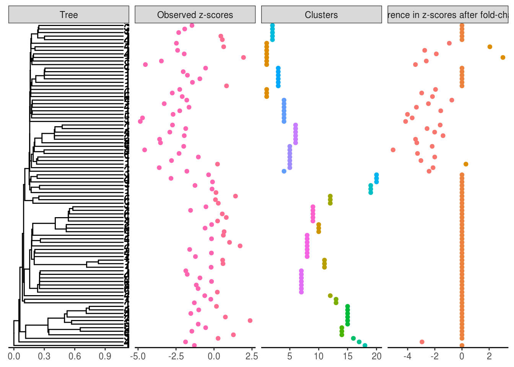
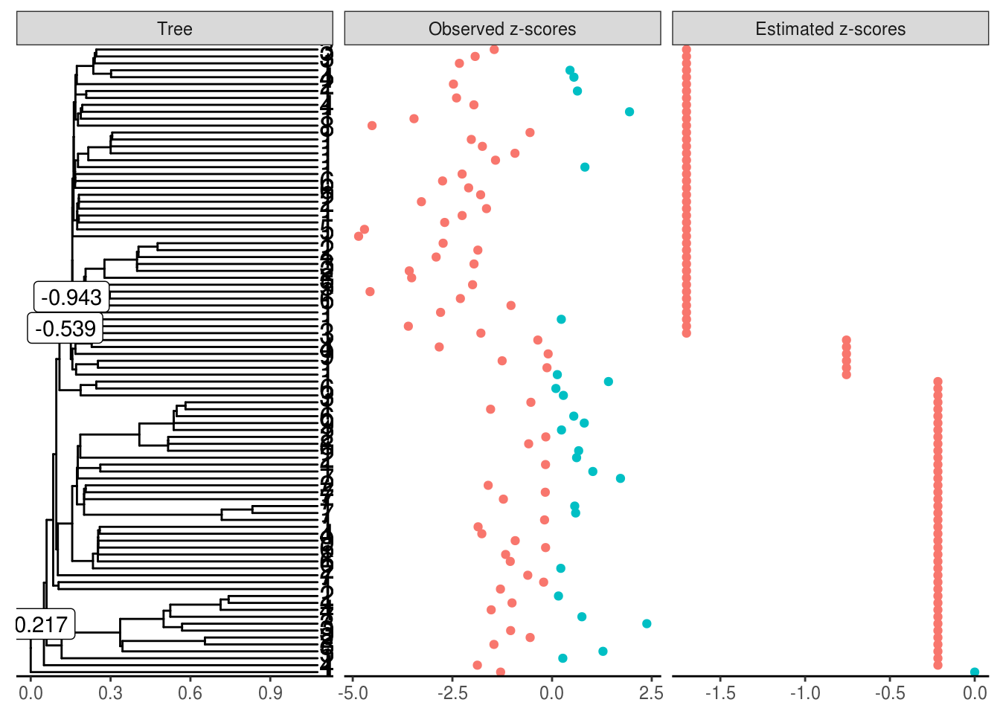
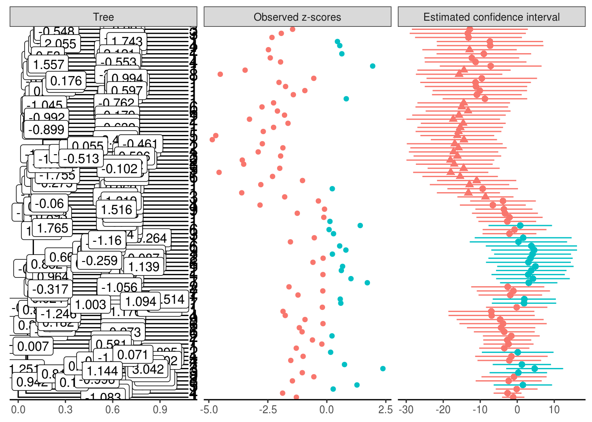
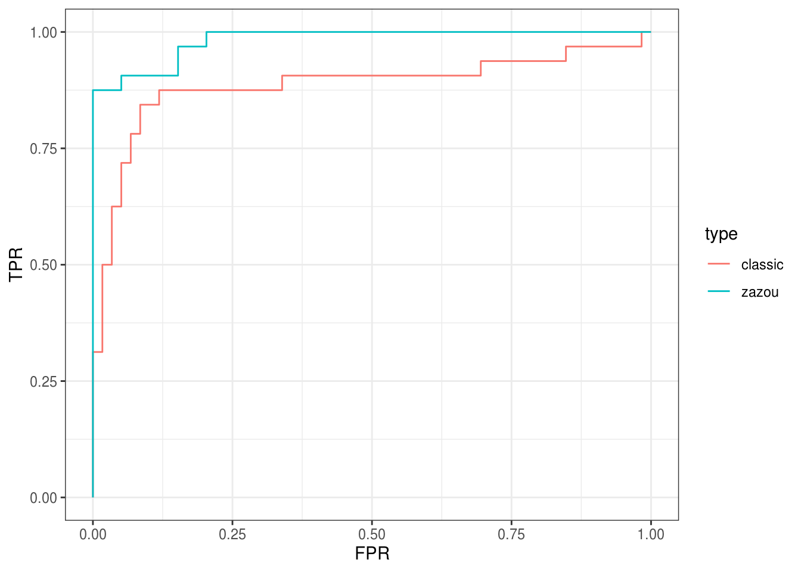

C Vignette de zazou
Nous commençons par charger les packages qui seront utilisés dans cette vignette.
On récupère ensuite le jeu de données de Wu et al. (2011), où l’on ne conserve que les individus avec une faible consommation d’alcool. On modifie les longueurs de branches de la phylogénie pour que celle-ci soit ultramétrique.
On filtre ensuite les OTUs qui sont présentes dans au moins 25 échantillons parmi les 49.
abund <- abund[rowSums(abund > 0) > 25, ]
tree <- ape::drop.tip(tree, setdiff(tree$tip.label, rownames(abund)))Il en reste alors 91.
Nous assignons ensuite chaque échantillon aléatoirement à un groupe \(A\) ou \(B\).
groups <- sample(c("A", "B"), size = ncol(abund), replace = TRUE)
pvalues_original <- test_wilcoxon(abund, groups)$p.value
zscores_original <- p2z(pvalues_original)
sum(pvalues_original < 0.05)[1] 7Certaines OTUs sont déjà considérées comme différentiellement abondantes.
L’ensemble des OTUs est partitionné en \(20\) groupes cohérents avec la phylogénie, comme expliqué dans la section 4.3.1. Puis \(5\) de ces groupes et les OTUs qu’ils contiennent sont tirés aléatoirement pour être différentiellement abondants.
clustering <- create_clusters(tree, N_clusters = 20,
method = "paraphyletic")
clusters_da <- sample(20, 5)
clusters_da[1] 5 4 6 1 17[1] 0.6483516On applique ensuite un fold-change de \(10\) aux OTUs différentiellement abondants dans le groupe \(B\).
On effectue un test de Wilcoxon sur ce nouveau jeu de données.
pvalues <- test_wilcoxon(abund, groups)$p.value
zscores <- p2z(pvalues)
plot_shifts(tree, NA, obs_scores = zscores,
sup_scores = list(
list(scores = clustering,
title = "Clusters",
color = as.character(clustering)),
list(scores = zscores - zscores_original,
title = "Difference in z-scores after fold-change",
color = as.character(sign(zscores - zscores_original)))
))Warning: Removed 181 rows containing missing values (geom_label).
Nous donnons ensuite nos \(z\)-scores à la fonction estimate_shifts pour déterminer la position idéale des sauts avec une régression lasso. La grille des \(\ou{\alpha}\) est également spécifiée mais celle des \(\lambda\) est déterminée automatiquement.
estimation_lasso <- estimate_shifts(zscores = zscores, tree = tree,
alphaOU = c(0.2, 0.5, 1, 2, 5),
method = "lasso")
estimation_lassoTree is binary with 91 leafs and 180 branches
Covariance matrix has been estimated from an OU with alpha = 5 and sigma = 3.162
---
Method: lasso with model selection
Regularization parameter: lambda = 14.068
Objective value: 100.466
BIC: 333.88
pBIC: 372.38
---
Estimated shifts: 0 -0.217 0 0 0 0 -0.539 -0.943 0 0 ...
3 shifts have been identified (ie 98.3 % of sparsity)
A parsimonious solution would involve 3 shifts
---
Observed z-scores: -2.474 -1.929 -1.451 -2.324 0.549 0.45 -2.397 0.636 -3.463 1.943 ...
Estimated z-scores: -1.7 -1.7 -1.7 -1.7 -1.7 -1.7 -1.7 -1.7 -1.7 -1.7 ...
90 z-scores have been shifted (ie 1.1 % of sparsity)Warning: Removed 178 rows containing missing values (geom_label).
Trois sauts sur l’arbre ont été détectés, sur des branches ayant beaucoup de descendants.
Si nous voulons avoir des \(p\)-valeurs et des intervalles de confiance, il faut utiliser une régression scaled lasso avant d’appliquer la fonction estimate_confint.
estimation_scaledlasso <-
estimate_shifts(zscores = zscores,
tree = tree, alphaOU = c(0.2, 0.5, 1, 2, 5),
method = "scaled lasso")
estimation_scoresystem <-
estimate_confint(estimation_scaledlasso,
method = "score system")t_star is not feasible, falling back to default value.Tree is binary with 91 leafs and 180 branches
Method: score system
Confidence threshold: 0.05
---
z-scores:
leaf estimate lower upper pvalue qvalue
1 283 -12.887241 -25.64441 -0.1300754 0.02385467 0.8941353
2 3494 -13.363635 -29.06041 2.3331434 0.04759456 1.0000000
3 3470 -12.803510 -28.47336 2.8663408 0.05463910 1.0000000
4 1661 -13.171378 -27.61457 1.2718194 0.03693836 1.0000000
5 4206 -7.310320 -21.70978 7.0891438 0.15985974 1.0000000
6 10038 -7.386608 -21.75859 6.9853783 0.15688556 1.0000000
...Warning: Removed 1 rows containing missing values (geom_label).
Après le débiaisage, les sauts dans les branches ne sont plus parcimonieux.
Nous allons regarder les performances de notre prédicteur via une courbe ROC.
df_measures_zazou <-
ebc_tidy_by_threshold(detection_values = pvalues_smoothed,
true = otus_da, all = rownames(abund))
df_measures_classic <-
ebc_tidy_by_threshold(detection_values = pvalues,
true = otus_da, all = rownames(abund))
bind_rows(mutate(df_measures_zazou, type = "zazou"),
mutate(df_measures_classic, type = "classic")) %>%
ggplot() +
aes(x = FPR, y = TPR, color = type) +
geom_line() +
theme_bw()
La courbe ROC de zazou est au dessus de celle de la méthode standard. Et ceci se traduit en terme d’AUC :
[1] 0.9825212[1] 0.8850636Version de {zazou} utilisée dans cette analyse :
[1] '0.0.1'